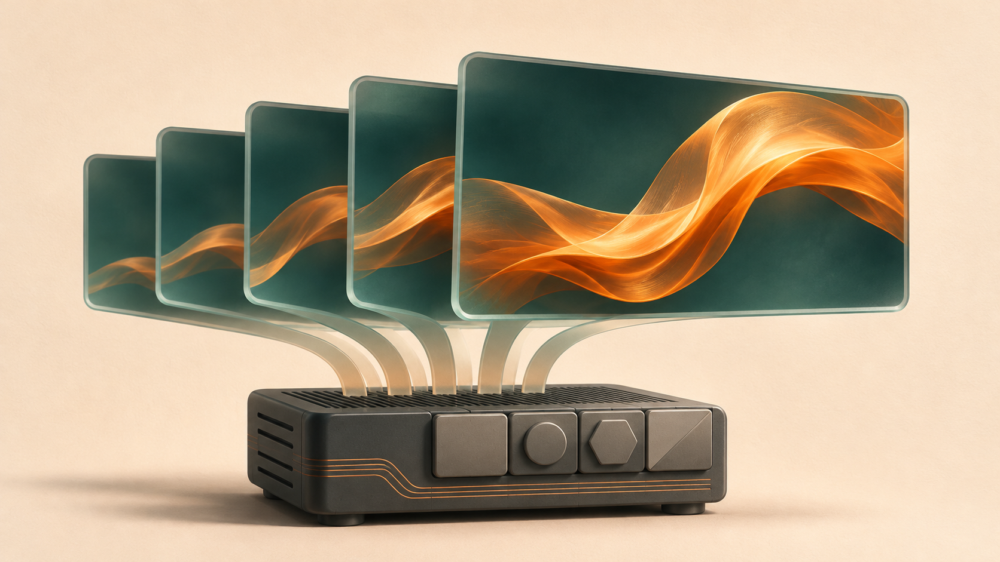

WRITING & IDEAS
Max · Talks
Max talk somethings related to Life - AI - Tech

2026-11-10 · English
5 Open Video Generation Models You Should Know
Compare Wan2.2, HunyuanVideo-1.5, LTX-2.5, MiniMax H3 and Kandinsky 6.0 by model size, GPU requirements, Mac acceleration, LoRA support and community tools, with links to official sample videos.

2026-11-05 · English
Chasing 100 SOL in Monthly Profit: Building an AI Pump.fun Trading Bot
Explore the six modules of a Pump.fun trading bot on Solana, including on-chain data, strategies, execution, model serving and training, console analytics, and deployment cost estimates.